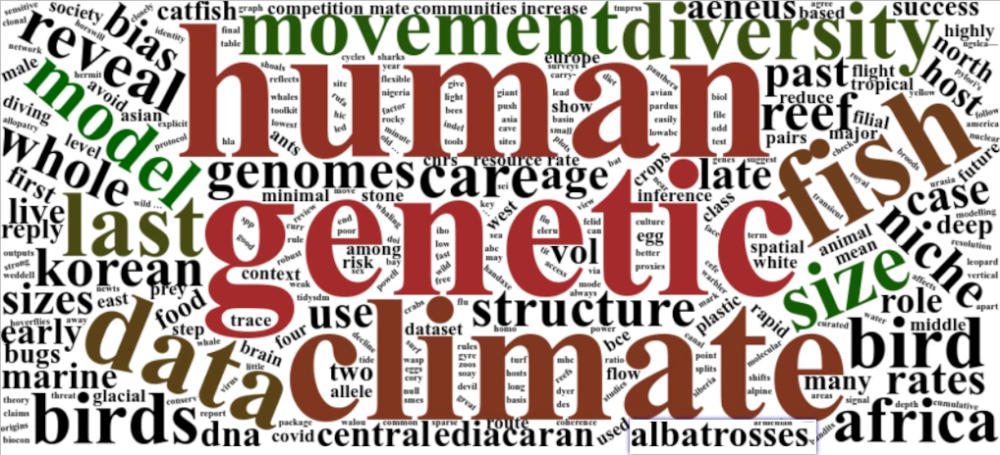

Warning in get_scholar_resp(url, attempts_left - 1): Cannot connect to Google
Scholar. Is the ID you provided correct?
Warning in get_scholar_resp(url, attempts_left - 1): Cannot connect to Google
Scholar. Is the ID you provided correct?
Warning in get_scholar_resp(url, attempts_left - 1): Cannot connect to Google
Scholar. Is the ID you provided correct?Publications from our group

This is a list of our papers, with group members in bold; click on the icon after each paper for a link to the original publication. If you are interested in the publications authored by a specific group member, go to their profile on the People page and follow their Google Scholar link.
Hovhannisyan, A., Delser, PM., Hakobyan, A., Jones, ER., Schraiber, JG., Antonosyan, M., Margaryan, A., Xue, Z., Jeon, S., Bhak, J., Hrechdakian, P., Sahakyan, H., Saag, L., Khachatryan, Z., Yepiskoposyan, L., & Manica, A. (2025). Demographic history and genetic variation of the Armenian population. The American Journal of Human Genetics. 112 (1), 11-27
Stephenson, NP., Delahooke, KM., Buma-at, PA., Rideout, BWT., Barnes, N., Kenchington, CG., Manica, A., & Mitchell, EG. (2025). Recolonisation strategies of early animals in the Avalon (Ediacaran 574-560 Ma). bioRxiv. 2025.01. 30.635654
Mitchell, EG., & Manica, A. (2025). The influence of reproductive mode on resource competition and diversity patterns in Ediacaran early animal communities. bioRxiv. 2025.01. 08.632049
Möller, P., Palmbo, F., Nielsen, AB., Boman, E., Dong, H., Björck, S., Cai, Y., Grimbe, J., Macleod, R., Shen, M., Wang, Y., Westerlund, M., & Xue, Z. (2025). The Mesolithic Hunter–Gatherer Camp Site at Sammakko in Norrbotten, Northernmost Sweden—Archeological Finds and Palaeoenvironmental Reconstruction. Geoarchaeology. 40 (1), e22030
Riley, RJ., Kwon, YM., Manica, A., & Savage, JL. (2025). Familiarity dampens the effect of boldness on coordination in three-spined sticklebacks. Behaviour. 1, 1-16
Khan, TM., Griffiths, HJ., Stephenson, NP., Whittle, RJ., Purser, A., Manica, A., & Mitchell, EG. (2025). Competition drives the dispersal dynamics of two cup coral morphs in populations on the Powell Basin slopes, Weddell Sea, Antarctica. Scientific Reports. 15 (1), 1-12
Padilla-Iglesias, C., Portillo, JB., Pricop, B., Ioannidis, A., Bickel, B., Manica, A., Vinicius, L., & Migliano, A. (2025). The ancestors of today’s Bantu speakers, like the rest of humanity, were originally hunter-gatherers.. OSF.
Colucci, M., Leonardi, M., Blinkhorn, J., Irish, SR., Padilla-Iglesias, C., Kaboth-Bar, S., Gosling, WD., Snow, RW., Manica, A., & Scerri, EML. (2025). Malaria shaped human spatial organisation for the last 74 thousand years. bioRxiv.
Padilla-Iglesias, C., Xue, Z., Leonardi, M., Paijmans, JLA., Colucci, M., Hovhannisyan, A., Maisano-Delser, P., Blanco-Portillo, J., Ioannidis, AG., Lucarini, G., Cerasoni, JN., Kandel, AW., Will, M., Hallett, EY., Lupo, K., Scerri, EML., Crevecoeur, I., Vinicius, L., Migliano, AB., & Manica, A. (2025). Pan-African metapopulation model explains Homo sapiens genetic and morphological evolution. bioRxiv. 2025.05. 22.655514
Padilla-Iglesias, C., Portillo, JB., Pricop, B., Ioannidis, A., Bickel, B., Manica, A., Vinicius, L., & Migliano, A. (2025). The ancestors of today’s Bantu speakers, like the rest of humanity, were originally hunter-gatherers. OSF, https://osf.io/preprints/osf/tn. n9yz_v1
Padilla-Iglesias, C., Nganga, D., Amboulou, E., Ruf, J., Ifo, SA., Vinicius, L., & Migliano, AB. (2025). Sexual division of labour shapes hunter-gatherer spatial ranges. bioRxiv. 2025.04. 15.649057
Hallett, EY., Leonardi, M., Cerasoni, JNò., Will, M., Beyer, R., Krapp, M., Kandel, AW., Manica, A., & Scerri, EML. (2025). Major expansion in the human niche preceded out of Africa dispersal. Nature. 1-7
Timbrell, L., Blinkhorn, J., Colucci, M., Leonardi, M., Chevalier, M., Pozzi, AV., Grove, M., Scerri, E., & Manica, A. (2025). More is not always better: delta-downscaling climate model outputs from 30 to 5 min resolution has minimal impact on coherence with Late Quaternary proxies. Climate of the Past. 21 (7), 1185-1208
Paterson, RS., Mackie, M., Capobianco, A., Heckeberg, NS., Fraser, D., Demarchi, B., Munir, F., Patramanis, I., Ramos-Madrigal, Jín., Liu, S., Ramsøe, AD., Dickinson, MR., Baldreki, Cë., Gilbert, M., Sardella, R., Bellucci, L., Scorrano, G., Leonardi, M., Manica, A., Racimo, F., Willerslev, E., Penkman, KEH., Olsen, JV., MacPhee, RDE., Rybczynski, N., Höhna, S., & Cappellini, E. (2025). Phylogenetically informative proteins from an Early Miocene rhinocerotid. Nature. 1-6
Blinkhorn, J., Zinner, D., Timbrell, L., Manica, A., Grove, M., & Scerri, EML. (2025). Identifying late Pleistocene and Holocene refugia for baboons. Communications Biology. 8 (1), 1003
Carter, EJ., Tysall, EE., Hodgson, J., & Manica, A. (2025). tidypopgen: Tidy Population Genetics in R. bioRxiv. 2025.06. 06.658325
Padilla-Iglesias, C., Blanco-Portillo, J., Pricop, B., Ioannidis, AG., Bickel, B., Manica, A., Vinicius, L., & Migliano, AB. (2024). Deep history of cultural and linguistic evolution among Central African hunter-gatherers. Nature Human Behaviour. 1-13
Fordham, DA., Brown, SC., Canteri, E., Austin, JJ., Lomolino, MV., Haythorne, S., Armstrong, E., Bocherens, Hé., Manica, A., Rey-Iglesia, A., Rahbek, C., Nogués-Bravo, D., & Lorenzen, ED. (2024). 52,000 years of woolly rhinoceros population dynamics reveal extinction mechanisms. Proceedings of the National Academy of Sciences. 121 (24), e2316419121
Leonardi, M., Colucci, M., Pozzi, AV., Scerri, EML., & Manica, A. (2024). tidysdm: Leveraging the flexibility of tidymodels for species distribution modelling in R. Methods in Ecology and Evolution. 15 (10), 1789-1795
Timbrell, L., Blinkhorn, J., Colucci, M., Leonardi, M., Chevalier, M., Grove, M., Scerri, E., & Manica, A. (2024). More is not always better: downscaling climate model outputs from 30 to 5-minute resolution has minimal impact on coherence with Late Quaternary proxies. Climate of the Past Discussions. 2024, 1-21
Gunasekaram, C., Battiston, F., Sadekar, O., Padilla-Iglesias, C., Noordwijk, MAv., Furrer, R., Manica, A., Bertranpetit, J., Whiten, A., Schaik, CPv., Vinicius, L., & Migliano, AB. (2024). Population connectivity shapes the distribution and complexity of chimpanzee cumulative culture. Science. 386 (6724), 920-925
Stephenson, NP., Delahooke, KM., Barnes, N., Rideout, BWT., Kenchington, CG., Manica, A., & Mitchell, EG. (2024). Morphology shapes community dynamics in early animal ecosystems. Nature Ecology & Evolution. 1-10
Bentley, LK., Phillips, RA., Carpenter‐Kling, T., Crawford, RJM., Cuthbert, RJ., Delord, K., Dilley, BJ., Makhado, AB., Miller, PI., Oppel, S., Pistorius, PA., Ryan, PG., Schoombie, S., Weimerskirch, H., & Manica, A. (2024). Habitat preferences of Phoebetria albatrosses in sympatry and allopatry. Journal of Biogeography.
Chiang, A., Haine, SS., Goldring, R., Jungwirth, A., Siddiqui, M., Wilkinson, G., Manica, A., & Riley, RJ. (2024). Comprehensive Husbandry Protocol for Corydoras Catfish and Many Other Amazonian Species. Journal of the American Association for Laboratory Animal Science. 63 (5 …
Khan, TM., Griffiths, HJ., Whittle, RJ., Stephenson, NP., Delahooke, KM., Purser, A., Manica, A., & Mitchell, EG. (2024). Network analyses on photographic surveys reveal that invertebrate predators do not structure epibenthos in the deep (~ 2000m) rocky Powell Basin, Weddell Sea, Antarctica. Frontiers in Marine Science. 11, 1408828
Fusco, M., Habte, B., Leplongeon, A., Menard, C., Manica, A., Spinapolice, EE., & Leonardi, M. (2024). The environmental context of the Middle-to-Late Stone Age Transition in eastern Africa: seasonality as a key factor. BioRXiv. 2024.12. 09.627606
Vizzari, MT., Ghirotto, S., Agostini, RB., Delser, PM., Cassidy, L., Manica, A., & Benazzo, A. (2024). Low-ABC: a robust demographic Inference from low-coverage whole-genome data through ABC. bioRxiv. 2024.08. 01.606209
Leonardi, M., Lycett, SJ., Manica, A., & Key, A. (2024). The Acheulean niche: climate and ecology predict handaxe production in Europe. bioRxiv. 2024.07. 19.604259
Padilla-Iglesias, C., & Bischoff, RJ. (2024). Hunter-gatherer mobility patterns influence the reconstruction of social networks from archaeological assemblages. Journal of Archaeological Science: Reports. 59, 104798
Padilla‐Iglesias, C., Basargekar, A., Woodward, AL., & Shneidman, LA. (2024). Exploring intra‐and inter‐cultural differences in toddlers’ time allocation in a Yucatec Maya and US community. Social Development. 33 (1), e12703
Padilla-Iglesias, C., & Derkx, I. (2024). Hunter–gatherer genetics research: Importance and avenues. Evolutionary Human Sciences. 6, e15
Campbell, OLK., Padilla-Iglesias, C., Fiorio, G., & Mace, R. (2024). Genetic markers of cousin marriage and honour cultures. Evolution and Human Behavior. 45 (6), 106636
Campbell, OLK., Padilla-Iglesias, C., Fiorio, G., & Mace, R. (2024). Corrigendum to “Genetic markers of cousin marriage and honour cultures”[Evolution & Human Behaviour (2024) Volume 45, Issue 6, 106,636].. Evolution and Human Behavior. 106637
Iglesias, CP., & Freeman, EC. (2024). Racing the clock. Science (New York, NY). 386 (6725), 1062
Iglesias, C Padilla. (2024). The Role of Mobility in Human Evolution: An Investigation Among Central African Hunter-Gatherers. University of Zurich.
Padilla-Iglesias, C., & Bamberg, A. (2024). Musical instruments, tools, language and genetic data reveal ancient hunter-gatherer networks. Nature Human Behaviour. 8 (7), 1245-1246
Huang, Z., Gu, Z., Cai, Y., Macleod, R., Xue, Z., Dong, H., Overballe-Petersen, Sør., Liu, S., Gao, Y., Li, H., Tang, S., Diao, X., Joergensen, ME., Dockter, C., Vinner, L., Willerslev, E., Chen, F., Wang, H., & Wang, Y. (2024). eProbe: a capture probe design toolkit for genetic diversity reconstructions from ancient environmental DNA. bioRxiv. 2024.09. 02.610737
Clark, BL., Carneiro, APB., Pearmain, EJ., Rouyer, M-M., Clay, TA., Cowger, W., Phillips, RA., Manica, A., Hazin, C., Eriksen, M., González-Solís, J., Adams, J., Albores-Barajas, YV., Alfaro-Shigueto, J., Alho, MS., Araujo, DT., Arcos, JéM., Arnould, JPY., Barbosa, NJP., Barbraud, C., Beard, AM., Beck, J., Bell, EA., Bennet, DG., Berlincourt, M., Biscoito, M., Bjørnstad, OK., Bolton, M., Jones, KAB., Borg, JJ., Bourgeois, K., Bretagnolle, V., Bried, Jël., Briskie, JV., Brooke, MdL., Brownlie, KC., Bugoni, L., Calabrese, L., Campioni, L., Carey, MJ., Carle, RD., Carlile, N., Carreiro, AR., Catry, P., Catry, T., Cecere, JG., Ceia, FR., Cherel, Y., Choi, C-Y., Cianchetti-Benedetti, M., Clarke, RH., Cleeland, JB., Colodro, V., & Congdon, B. (2023). Global assessment of marine plastic exposure risk for oceanic birds. Nature Communications. 14 (1), 3665
Leonardi, M., Hallett, EY., Beyer, R., Krapp, M., & Manica, A. (2023). pastclim 1.2: an R package to easily access and use paleoclimatic reconstructions. Ecography. 2023 (3), e06481
Cerasoni, JNò., Hallett, EY., Orijemie, EA., Ashastina, K., Lucas, M., Farr, L., Höhn, A., Kiahtipes, CA., Blinkhorn, J., Roberts, P., Manica, A., & Scerri, EML. (2023). Human interactions with tropical environments over the last 14,000 years at Iho Eleru, Nigeria. Iscience. 26 (3)
Mashoodh, R., Trowsdale, AT., Manica, A., & Kilner, RM. (2023). Parental care shapes the evolution of molecular genetic variation. Evolution Letters. 7 (6), 379-388
Bentley, LK., Manica, A., Dilley, BJ., Ryan, PG., & Phillips, RA. (2023). Divergent foraging habitat preferences between summer‐breeding and winter‐breeding Procellaria petrels. Ibis. 165 (2), 618-628
Leedham, S., Paijmans, JLA., Manica, A., & Leonardi, M. (2023). Niche conservatism in a generalist felid: low differentiation of the climatic niche among subspecies of the leopard (Panthera pardus). bioRxiv. 2023.01. 26.525491
Mitchell, E., & Manica, A. (2023). The Influence of Stoloniferous Reproduction on Ediacaran Eco-Evolutionary Dynamics. Geological Society of America Abstracts. 55, 390870
Beyer, RM., Hua, F., Martin, PA., Manica, A., & Rademacher, T. (2022). Relocating croplands could drastically reduce the environmental impacts of global food production. Communications Earth & Environment. 3 (1), 49
Degroot, D., Anchukaitis, KJ., Tierney, JE., Riede, F., Manica, A., Moesswilde, E., & Gauthier, N. (2022). The history of climate and society: a review of the influence of climate change on the human past. Environmental Research Letters. 17 (10), 103001
Fordham, DA., Brown, SC., Akçakaya, HRşi., Brook, BW., Haythorne, S., Manica, A., Shoemaker, KT., Austin, JJ., Blonder, B., Pilowsky, JA., Rahbek, C., & Nogues‐Bravo, D. (2022). Process‐explicit models reveal pathway to extinction for woolly mammoth using pattern‐oriented validation. Ecology Letters. 25 (1), 125-137
Padilla-Iglesias, C., Atmore, LM., Olivero, Jús., Lupo, K., Manica, A., Isaza, EíaA., Vinicius, L., & Migliano, AB. (2022). Population interconnectivity over the past 120,000 years explains distribution and diversity of Central African hunter-gatherers. Proceedings of the National Academy of Sciences. 119 (21), e2113936119
Timbrell, L., Grove, M., Manica, A., Rucina, S., & Blinkhorn, J. (2022). A spatiotemporally explicit paleoenvironmental framework for the Middle Stone Age of eastern Africa. Scientific Reports. 12 (1), 3689
Eden, R., Manica, A., & Mitchell, EG. (2022). Metacommunity analyses show an increase in ecological specialisation throughout the Ediacaran period. PLoS Biology. 20 (5), e3001289
Wang, Y., Korneliussen, TS., Holman, LE., Manica, A., & Pedersen, MW. (2022). ngsLCA—A toolkit for fast and flexible lowest common ancestor inference and taxonomic profiling of metagenomic data. Methods in Ecology and Evolution. 13 (12), 2699-2708
Leonardi, M., Boschin, F., Boscato, P., & Manica, A. (2022). Following the niche: the differential impact of the last glacial maximum on four European ungulates. Communications Biology. 5 (1), 1038
Kennerley, JA., Somveille, M., Hauber, ME., Richardson, NM., Manica, A., & Feeney, WE. (2022). The overlooked complexity of avian brood parasite–host relationships. Ecology Letters. 25 (8), 1889-1904
Frankish, CK., Manica, A., Clay, TA., Wood, AG., & Phillips, RA. (2022). Ontogeny of movement patterns and habitat selection in juvenile albatrosses. Oikos. 2022 (6), e09057
Buss, DL., Hearne, E., Loy, RHY., Manica, A., O’Connell, TC., & Jackson, JA. (2022). Evidence of resource partitioning between fin and sei whales during the twentieth-century whaling period. Marine Biology. 169 (11), 150
Horswill, C., Wood, MJ., & Manica, A. (2022). Temporal change in the contribution of immigration to population growth in a wild seabird experiencing rapid population decline. Ecography. 2022 (11), e05846
Cerasoni, JNò., Hallett, EY., Arous, EB., Beyer, RM., Krapp, M., Manica, A., & Scerri, EML. (2022). Archaeological sites and palaeoenvironments of Pleistocene West Africa. Journal of Maps. 18 (4), 630-637
Padilla-Iglesias, C., Blanco-Portillo, J., Ioannidis, A., Manica, A., Vinicius, L., & Migliano, A. (2022). Cultural Evolution of Central African hunter-gatherers reflects a deep history of interconnectivity. **.
Spaet, JLY., Butcher, PA., Manica, A., & Lam, CH. (2022). Spatial Dynamics and Fine-Scale Vertical Behaviour of Immature Eastern Australasian White Sharks (Carcharodon carcharias). Biology. 11 (12), 1689
Daversa, DR., Bosch, J., Manica, A., Garner, TWJ., & Fenton, A. (2022). Host Identity Matters—Up to a Point: The Community Context of Batrachochytrium dendrobatidis Transmission. The American Naturalist. 200 (4), 584-597
Pilowsky, JA., Manica, A., Brown, S., Rahbek, C., & Fordham, DA. (2022). Simulations of human migration into North America are more sensitive to demography than choice of palaeoclimate model. Ecological Modelling. 473, 110115
Riley, RJ., Gillie, ER., Savage, JL., Manica, A., & Boogert, NJ. (2022). Familiarity, personality, and foraging performance in three-spined sticklebacks. Behavioural Processes. 200, 104699
Will, M., Krapp, M., Stock, JT., & Manica, A. (2022). Combining paleoenvironmental and paleoanthropological datasets to understand human brain and body size evolution. Human Origins–Digital Future. 54
Beyer, RM., Manica, A., & Mora, C. (2021). Shifts in global bat diversity suggest a possible role of climate change in the emergence of SARS-CoV-1 and SARS-CoV-2. Science of the Total Environment. 767, 145413
Beyer, RM., Krapp, M., Eriksson, A., & Manica, A. (2021). Climatic windows for human migration out of Africa in the past 300,000 years. Nature Communications. 12 (1), 4889
Will, M., Krapp, M., Stock, JT., & Manica, A. (2021). Different environmental variables predict body and brain size evolution in Homo. Nature Communications. 12 (1), 4116
Jensen, MR., Sigsgaard, EE., Liu, S., Manica, A., Bach, SS., Hansen, MMøl., Møller, PR., & Thomsen, PF. (2021). Genome‐scale target capture of mitochondrial and nuclear environmental DNA from water samples. Molecular Ecology Resources. 21 (3), 690-702
Krapp, M., Beyer, RM., Edmundson, SL., Valdes, PJ., & Manica, A. (2021). A statistics-based reconstruction of high-resolution global terrestrial climate for the last 800,000 years. Scientific Data. 8 (1), 228
Paijmans, JLA., Barlow, A., Becker, MS., Cahill, JA., Fickel, J., Förster, DWG., Gries, K., Hartmann, S., Havmøller, RWøe., Henneberger, K., Kern, C., Kitchener, AC., Lorenzen, ED., Mayer, F., OBrien, SJ., Seth, Jv., Sinding, M-HS., Spong, Gör., Uphyrkina, O., Wachter, B., Westbury, MV., Dalén, L., Bhak, J., Manica, A., & Hofreiter, M. (2021). African and Asian leopards are highly differentiated at the genomic level. Current Biology. 31 (9), 1872-1882. e5
Thorup, K., Pedersen, L., Fonseca, RRD., Naimi, B., Nogués-Bravo, D., Krapp, M., Manica, A., Willemoes, M., Sjöberg, S., Feng, S., Chen, G., Rey-Iglesia, A., Campos, PF., Beyer, R., Araújo, MB., Hansen, AJ., Zhang, G., Tøttrup, AP., & Rahbek, C. (2021). Response of an Afro-Palearctic bird migrant to glaciation cycles. Proceedings of the National Academy of Sciences. 118 (52), e2023836118
Moodley, Y., Brunelli, A., Ghirotto, S., Klyubin, A., Maady, AS., Tyne, W., Muñoz-Ramirez, ZY., Zhou, Z., Manica, A., Linz, B., & Achtman, M. (2021). Helicobacter pylori’s historical journey through Siberia and the Americas. Proceedings of the National Academy of Sciences. 118 (25), e2015523118
Bentley, LK., Kato, A., Ropert-Coudert, Y., Manica, A., & Phillips, RA. (2021). Diving behaviour of albatrosses: implications for foraging ecology and bycatch susceptibility. Marine Biology. 168 (3), 36
Miller, EF., Green, RE., Balmford, A., Delser, PM., Beyer, R., Somveille, M., Leonardi, M., Amos, W., & Manica, A. (2021). Bayesian skyline plots disagree with range size changes based on species distribution models for Holarctic birds. Molecular Ecology. 30 (16), 3993-4004
Nanninga, GB., Pertzelan, A., Kiflawi, M., Holzman, R., Plakolm, I., & Manica, A. (2021). Treatment-level impacts of microplastic exposure may be confounded by variation in individual-level responses in juvenile fish. Journal of Hazardous Materials. 416, 126059
Jeon, S., Blazyte, A., Yoon, C., Ryu, H., Jeon, Y., Bhak, Y., Bolser, D., Manica, A., Shin, E-S., Cho, YS., Kim, BC., Ryoo, N., Choi, H., & Bhak, J. (2021). Regional TMPRSS2 V197M allele frequencies are correlated with COVID-19 case fatality rates. Molecules and Cells. 44 (9), 680-687
Horswill, C., Manica, A., Daunt, F., Newell, M., Wanless, S., Wood, M., & Matthiopoulos, J. (2021). Improving assessments of data‐limited populations using life‐history theory. Journal of Applied Ecology. 58 (6), 1225-1236
Frankish, CK., Cunningham, C., Manica, A., Clay, TA., Prince, S., & Phillips, RA. (2021). Tracking juveniles confirms fisheries-bycatch hotspot for an endangered albatross. Biological Conservation. 261, 109288
Schlebusch, CM., Loog, L., Groucutt, HS., King, T., Rutherford, A., Barbieri, C., Barbujani, G., Chikhi, L., Stringer, C., Jakobsson, M., Eriksson, A., Manica, A., Tishkoff, SA., Scerri, EML., Scally, A., Brierley, C., & Thomas, MG. (2021). Human origins in Southern African palaeo-wetlands? Strong claims from weak evidence. Journal of Archaeological Science. 130, 105374
Frankish, CK., Manica, A., Navarro, J., & Phillips, RA. (2021). Movements and diving behaviour of white‐chinned petrels: Diurnal variation and implications for bycatch mitigation. Aquatic Conservation: Marine and Freshwater Ecosystems. 31 (7), 1715-1729
Jeon, Y., Jeon, S., Blazyte, A., Kim, YJ., Lee, JJ., Bhak, Y., Cho, YS., Park, Y., Noh, E-K., Manica, A., Edwards, JS., Bolser, D., Kim, S., Lee, Y., Yoon, C., Lee, S., Kim, BC., Park, NH., & Bhak, J. (2021). Welfare genome project: A participatory Korean personal genome project with free health check-up and genetic report followed by counseling. Frontiers in Genetics. 12, 633731
Bonnet‐Lebrun, AS., Somveille, M., Rodrigues, ASL., & Manica, A. (2021). Exploring intraspecific variation in migratory destinations to investigate the drivers of migration. Oikos. 130 (2), 187-196
Delser, PM., Jones, ER., Hovhannisyan, A., Cassidy, L., Pinhasi, R., & Manica, A. (2021). A curated dataset of modern and ancient high-coverage shotgun human genomes. Scientific Data. 8 (1), 202
Daversa, DR., Manica, A., Cenis, H Bintanel., Lopez, P., Garner, TWJ., & Bosch, J. (2021). Alpine Newts (Ichthyosaura alpestris) Avoid Habitats Previously Used by Parasite-Exposed Conspecifics. Frontiers in Ecology and Evolution. 9, 636099
Delser, PM., Krapp, M., Beyer, R., Jones, ER., Miller, EF., Hovhannisyan, A., Parker, M., Siska, V., Vizzari, MT., Pearmain, EJ., Imaz-Rosshandler, I., Leonardi, M., Somma, GL., Hodgson, J., Tysall, E., Xue, Z., Cassidy, L., Bradley, DG., Eriksson, A., & Manica, A. (2021). Climate and mountains shaped human ancestral genetic lineages. BioRxiv. 2021.07. 13.452067
Miller, EF., Leonardi, M., Xue, Z., Beyer, R., Krapp, M., Somveille, M., Somma, GL., Delser, PM., & Manica, A. (2021). Post-glacial expansion dynamics, not refugial isolation, shaped the genetic structure of a migratory bird, the yellow warbler. BioRxiv. 2021.05. 10.443405
Beyer, R., & Manica, A. (2021). Global and country-level data of the biodiversity footprints of 175 crops and pasture. Data in Brief. 36, 106982
Moreau, L., Draily, C., Cordy, J-M., Boyle, K., Buckley, M., Gjesfjeld, E., Filzmoser, P., Borgia, V., Gibson, SA., Day, J., Beyer, R., Manica, A., Linden, MV., Grooth, MD., & Pirson, Sép. (2021). Adaptive trade-offs towards the last glacial maximum in north-western Europe: a multidisciplinary view from Walou Cave. Journal of Paleolithic Archaeology. 4, 1-41
Beyer, R., & Manica, A. (2021). Range sizes of the world’s mammals, birds, and amphibians from the mid-Holocene to the Industrial period. Animals. 11 (12), 3561
Warmuth, VM., Burgess, MD., Laaksonen, T., Manica, A., Mägi, M., Nord, A., Primmer, CR., Sætre, G-P., Winkel, W., & Ellegren, H. (2021). Major population splits coincide with episodes of rapid climate change in a forest-dependent bird. Proceedings of the Royal Society B. 288 (1962), 20211066
Miller, EF., & Manica, A. (2021). mtDNAcombine: tools to combine sequences from multiple studies. BMC Bioinformatics. 22, 1-15
Leonardi, M., Barbujani, G., & Manica, A. (2021). Genetic demography: What does it mean and how to interpret it, with a case study on the Neolithic transition. Ancient Connections in Eurasia, ed. by H. Reyes-Centeno and K. Harvati. 91-100
Miller, EF., Leonardi, M., Xue, Z., Beyer, R., Krapp, M., Somveille, M., Somma, GL., Delser, PM., & Manica, A. (2021). Post-glacial expansion dynamics, not refugial isolation, shaped the genetic structure of a migratory bird, the Yellow Warbler (Setophaga petechia). bioRxiv. 2021.05. 10.443405
Beyer, RM., & Manica, A. (2021). Global Biodiversity Footprints of Crops and Pasture: A Country-Level Analysis. < bound method Organization. get_name_with_acronym of< Organization: Potsdam ….
Beyer, RM., Manica, A., & Mora, C. (2021). Climate Change and Bat Diversity: Implications for SARS-CoV Emergence. < bound method Organization. get_name_with_acronym of< Organization: Potsdam ….
Loog, L., Thalmann, O., Sinding, M‐HS., Schuenemann, VJ., Perri, A., Germonpré, M., Bocherens, H., Witt, KE., Castruita, JAS., Velasco, MS., Lundstrøm, IKC., Wales, N., Sonet, G., Frantz, L., Schroeder, H., Budd, J., Jimenez, E‐L., Fedorov, S., Gasparyan, B., Kandel, AW., Lázničková‐Galetová, M., Napierala, H., Uerpmann, H‐P., Nikolskiy, PA., Pavlova, EY., Pitulko, VV., Herzig, K‐H., Malhi, RS., Willerslev, E., Hansen, AJ., Dobney, K., Gilbert, MTP., Krause, J., Larson, G., Eriksson, A., & Manica, A. (2020). Ancient DNA suggests modern wolves trace their origin to a Late Pleistocene expansion from Beringia. Molecular Ecology. 29 (9), 1596-1610
Jeon, S., Bhak, Y., Choi, Y., Jeon, Y., Kim, S., Jang, J., Jang, J., Blazyte, A., Kim, C., Kim, Y., Shim, J., Kim, N., Kim, YJ., Park, SG., Kim, J., Cho, YS., Park, Y., Kim, H-M., Kim, B-C., Park, N-H., Shin, E-S., Kim, BC., Bolser, D., Manica, A., Edwards, JS., Church, G., Lee, S., & Bhak, J. (2020). Korean Genome Project: 1094 Korean personal genomes with clinical information. Science Advances. 6 (22), eaaz7835
Beyer, RM., Krapp, M., & Manica, A. (2020). High-resolution terrestrial climate, bioclimate and vegetation for the last 120,000 years. Scientific Data. 7 (1), 236
Martiniano, R., Garrison, E., Jones, ER., Manica, A., & Durbin, R. (2020). Removing reference bias and improving indel calling in ancient DNA data analysis by mapping to a sequence variation graph. Genome Biology. 21, 1-18
Beyer, RM., & Manica, A. (2020). Historical and projected future range sizes of the world’s mammals, birds, and amphibians. Nature Communications. 11 (1), 5633
Beyer, R., Krapp, M., & Manica, A. (2020). An empirical evaluation of bias correction methods for palaeoclimate simulations. Climate of the Past. 16 (4), 1493-1508
Bonnet-Lebrun, AS., Manica, A., & Rodrigues, ASL. (2020). Effects of urbanization on bird migration. Biological Conservation. 244, 108423
Betti, L., Beyer, RM., Jones, ER., Eriksson, A., Tassi, F., Siska, V., Leonardi, M., Delser, PM., Bentley, LK., Nigst, PR., Stock, JT., Pinhasi, R., & Manica, A. (2020). Climate shaped how Neolithic farmers and European hunter-gatherers interacted after a major slowdown from 6,100 bce to 4,500 bce. Nature Human Behaviour. 4 (10), 1004-1010
Spaet, JLY., Manica, A., Brand, CP., Gallen, C., & Butcher, PA. (2020). Environmental conditions are poor predictors of immature white shark Carcharodon carcharias occurrences on coastal beaches of eastern Australia. Marine Ecology Progress Series. 653, 167-179
Weber, JA., Park, SG., Luria, V., Jeon, S., Kim, H-M., Jeon, Y., Bhak, Y., Jun, JH., Kim, SW., Hong, WH., Lee, S., Cho, YS., Karger, A., Cain, JW., Manica, A., Kim, S., Kim, J-H., Edwards, JS., Bhak, J., & Church, GM. (2020). The whale shark genome reveals how genomic and physiological properties scale with body size. Proceedings of the National Academy of Sciences. 117 (34), 20662-20671
Somveille, M., Wikelski, M., Beyer, RM., Rodrigues, ASL., Manica, A., & Jetz, W. (2020). Simulation-based reconstruction of global bird migration over the past 50,000 years. Nature Communications. 11 (1), 801
Nanninga, GB., Scott, A., & Manica, A. (2020). Microplastic ingestion rates are phenotype-dependent in juvenile anemonefish. Environmental Pollution. 259, 113855
Frankish, CK., Phillips, RA., Clay, TA., Somveille, M., & Manica, A. (2020). Environmental drivers of movement in a threatened seabird: insights from a mechanistic model and implications for conservation. Diversity and Distributions. 26 (10), 1315-1329
Frankish, CK., Manica, A., & Phillips, RA. (2020). Effects of age on foraging behavior in two closely related albatross species. Movement Ecology. 8, 1-17
Nanninga, GB., Horswill, C., Lane, SM., Manica, A., & Briffa, M. (2020). Microplastic exposure increases predictability of predator avoidance strategies in hermit crabs. Journal of Hazardous Materials Letters. 1, 100005
Ning, C., Fernandes, D., Changmai, P., Flegontova, O., Yüncü, E., Maier, R., Altınışık, NE., Kassian, AS., Krause, J., Lalueza-Fox, C., Manica, A., Potter, BA., Robbeets, M., Sirak, K., Siska, V., Vajda, EJ., Vyazov, LA., Wang, K., Wang, L., Wu, X., Xiao, X., Zhang, F., Reich, D., Schiffels, S., Pinhasi, R., Cui, Y., & Flegontov, P. (2020). The genomic formation of First American ancestors in East and Northeast Asia. BioRxiv. 2020.10. 12.336628
Brooker, RM., Casey, JM., Cowan, Z-L., Sih, TL., Dixson, DL., Manica, A., & Feeney, WE. (2020). Domestication via the commensal pathway in a fish-invertebrate mutualism. Nature Communications. 11 (1), 6253
Bosch, J., Carrascal, LM., Manica, A., & Garner, TWJ. (2020). Significant reductions of host abundance weakly impact infection intensity of Batrachochytrium dendrobatidis. PLoS One. 15 (11), e0242913
Seidualy, M., Blazyte, A., Jeon, S., Bhak, Y., Jeon, Y., Kim, J., Eriksson, A., Bolser, D., Yoon, C., Manica, A., Lee, S., & Bhak, J. (2020). Decoding a highly mixed Kazakh genome. Human Genetics. 139, 557-568
Aivaz, AN., Manica, A., Neuhaus, P., & Ruckstuhl, KE. (2020). Picky predators and odd prey: colour and size matter in predator choice and zebrafish’s vulnerability–a refinement of the oddity effect. Ethology Ecology & Evolution. 32 (2), 135-147
Riley, RJ., Roe, TP., Gillie, ER., & Manica, A. (2020). The development of tactile social interactions in Corydoras aeneus larvae. Behaviour. 157 (6), 515-539
Geldmann, J., Manica, A., Burgess, ND., Coad, L., & Balmford, A. (2019). A global-level assessment of the effectiveness of protected areas at resisting anthropogenic pressures. Proceedings of the National Academy of Sciences. 116 (46), 23209-23215
Batchelor, CL., Margold, M., Krapp, M., Murton, DK., Dalton, AS., Gibbard, PL., Stokes, CR., Murton, JB., & Manica, A. (2019). The configuration of Northern Hemisphere ice sheets through the Quaternary. Nature Communications. 10 (1), 3713
Alves, JM., Carneiro, M., Cheng, JY., Matos, ALd., Rahman, MM., Loog, L., Campos, PF., Wales, N., Eriksson, A., Manica, A., Strive, T., Graham, SC., Afonso, S., Bell, DJ., Belmont, L., Day, JP., Fuller, SJ., Marchandeau, Sép., Palmer, WJ., Queney, G., Surridge, AK., Vieira, FG., McFadden, G., Nielsen, R., Gilbert, MTP., Esteves, PJ., Ferrand, N., & Jiggins, FM. (2019). Parallel adaptation of rabbit populations to myxoma virus. Science. 363 (6433), 1319-1326
Hanghøj, K., Moltke, I., Andersen, PA., Manica, A., & Korneliussen, TS. (2019). Fast and accurate relatedness estimation from high-throughput sequencing data in the presence of inbreeding. GigaScience. 8 (5), giz034
Somveille, M., Manica, A., & Rodrigues, ASL. (2019). Where the wild birds go: explaining the differences in migratory destinations across terrestrial bird species. Ecography. 42 (2), 225-236
González-Fortes, G., Tassi, F., Trucchi, E., Henneberger, K., Paijmans, JLA., Díez-del-Molino, D., Schroeder, H., Susca, RR., Barroso-Ruíz, C., Bermúdez, FJ., Barroso-Medina, C., Bettencourt, AMS., Sampaio, HA., Grandal-d’Anglade, A., Salas, A., Lombera-Hermida, Ad., Valcarce, RónFáb., Vaquero, M., Alonso, S., Lozano, M., Rodríguez-Alvarez, XéP., Fernández-Rodríguez, C., Manica, A., Hofreiter, M., & Barbujani, G. (2019). A western route of prehistoric human migration from Africa into the Iberian Peninsula. Proceedings of the Royal Society B: Biological Sciences. 286 (1895), 20182288
Kim, H-M., Weber, JA., Lee, N., Park, SG., Cho, YS., Bhak, Y., Lee, N., Jeon, Y., Jeon, S., Luria, V., Karger, A., Kirschner, MW., Jo, YJ., Woo, S., Shin, K., Chung, O., Ryu, J-C., Yim, H-S., Lee, J-H., Edwards, JS., Manica, A., Bhak, J., & Yum, S. (2019). The genome of the giant Nomura’s jellyfish sheds light on the early evolution of active predation. BMC Biology. 17, 1-12
Beyer, R., Krapp, M., & Manica, A. (2019). A systematic comparison of bias correction methods for paleoclimate simulations. Clim. Past Discuss. 11, 1-23
Kim, H-S., Jeon, S., Kim, C., Kim, YK., Cho, YS., Kim, J., Blazyte, A., Manica, A., Lee, S., & Bhak, J. (2019). Chromosome-scale assembly comparison of the Korean Reference Genome KOREF from PromethION and PacBio with Hi-C mapping information. GigaScience. 8 (12), giz125
Feeney, WE., Brooker, RM., Johnston, LN., Gilbert, JDJ., Besson, M., Lecchini, D., Dixson, DL., Cowman, PF., & Manica, A. (2019). Predation drives recurrent convergence of an interspecies mutualism. Ecology Letters. 22 (2), 256-264
Cho, YS., Jun, JH., Kim, JA., Kim, H-M., Chung, O., Kang, S-G., Park, J-Y., Kim, H-J., Kim, S., Kim, H-J., Jang, J-h., Na, K-J., Kim, J., Park, SG., Lee, H-Y., Manica, A., Mindell, DP., Fuchs, Jérôm., Edwards, JS., Weber, JA., Witt, CC., Yeo, J-H., Kim, S., & Bhak, J. (2019). Raptor genomes reveal evolutionary signatures of predatory and nocturnal lifestyles. Genome Biology. 20, 1-11
Riley, RJ., Gillie, ER., Savage, JL., Boogert, NJ., Manica, A., & Jungwirth, A. (2019). The role of tactile interactions in flight responses in the Bronze Cory catfish (Corydoras aeneus). Ethology. 125 (11), 810-820
Lee, C-Y., Pike, DA., Tseng, H-Y., Hsu, J-Y., Huang, S-L., Shaner, P-JL., Liao, C-P., Manica, A., & Huang, W-S. (2019). When males live longer: Resource-driven territorial behavior drives sex-specific survival in snakes. Science Advances. 5 (4), eaar5478
Viganò, A., Manica, A., Piero, V Di., & Leonardi, M. (2019). Did going north give us migraine? An evolutionary approach on understanding latitudinal differences in migraine epidemiology. Headache: The Journal of Head and Face Pain. 59 (4), 632-634
Riley, RJ., Gillie, ER., Horswill, C., Johnstone, RA., Boogert, NJ., & Manica, A. (2019). Coping with strangers: how familiarity and active interactions shape group coordination in Corydoras aeneus. Royal Society Open Science. 6 (9), 190587
Beyer, R., Singarayer, JS., Stock, JT., & Manica, A. (2019). Environmental conditions do not predict diversification rates in the Bantu languages. Heliyon. 5 (10)
Krapp, M., Beyer, R., Edmundson, SL., Valdes, PJ., & Manica, A. (2019). A comprehensive climate history of the last 800 thousand years. Earth Arxiv.
Krapp, M., Beyer, R., Edmundson, SL., Valdes, PJ., & Manica, A. (2019). A comprehensive history of climate and habitat stability of the last 800,000 years. Climate of the Past Discussions. 2019, 1-29
Horswill, C., & Manica, A. (2019). California swordfish fishery: Maximizing the catch rate of a target species simultaneously minimizes bycatch rates. Proceedings of the National Academy of Sciences. 116 (15), 7172-7173
Betti, L., & Manica, A. (2019). Women’s birth canals are extremely variable in shape. The Science Breaker.
Scerri, EML., Thomas, MG., Manica, A., Gunz, P., Stock, JT., Stringer, C., Grove, M., Groucutt, HS., Timmermann, A., Rightmire, GP., d’Errico, F., Tryon, CA., Drake, NA., Brooks, AS., Dennell, RW., Durbin, R., Henn, BM., Lee-Thorp, J., Demenocal, P., Petraglia, MD., Thompson, JC., Scally, A., & Chikhi, Lès. (2018). Did our species evolve in subdivided populations across Africa, and why does it matter?. Trends in Ecology & Evolution. 33 (8), 582-594
Daly, KG., Delser, PM., Mullin, VE., Scheu, A., Mattiangeli, V., Teasdale, MD., Hare, AJ., Burger, J., Verdugo, MP., Collins, MJ., Kehati, R., Erek, CM., Bar-Oz, G., Pompanon, Fço., Cumer, T., Çakırlar, C., Mohaseb, AF., Decruyenaere, D., Davoudi, H., Çevik, Öz., Rollefson, G., Vigne, J-D., Khazaeli, R., Fathi, H., Doost, SB., Sorkhani, RR., Vahdati, AA., Sauer, EW., Kharanaghi, HA., Maziar, S., Gasparian, B., Pinhasi, R., Martin, L., Orton, D., Arbuckle, BS., Benecke, N., Manica, A., Horwitz, LK., Mashkour, M., & Bradley, DG. (2018). Ancient goat genomes reveal mosaic domestication in the Fertile Crescent. Science. 361 (6397), 85-88
Scheib, CL., Li, H., Desai, T., Link, V., Kendall, C., Dewar, G., Griffith, PW., Mörseburg, A., Johnson, JR., Potter, A., Kerr, SL., Endicott, P., Lindo, J., Haber, M., Xue, Y., Tyler-Smith, C., Sandhu, MS., Lorenz, JG., Randall, TD., Faltyskova, Z., Pagani, L., Danecek, P., O’Connell, TC., Martz, P., Boraas, AS., Byrd, BF., Leventhal, A., Cambra, R., Williamson, R., Lesage, L., Holguin, B., Soto, EY-D., Rosas, JT., Metspalu, M., Stock, JT., Manica, A., Scally, A., Wegmann, D., Malhi, RS., & Kivisild, T. (2018). Ancient human parallel lineages within North America contributed to a coastal expansion. Science. 360 (6392), 1024-1027
Betti, L., & Manica, A. (2018). Human variation in the shape of the birth canal is significant and geographically structured. Proceedings of the Royal Society B. 285 (1889), 20181807
Somveille, M., Rodrigues, ASL., & Manica, A. (2018). Energy efficiency drives the global seasonal distribution of birds. Nature Ecology & Evolution. 2 (6), 962-969
Fernandes, DM., Strapagiel, D., Borówka, P., Marciniak, Błaże., Żądzińska, Eżb., Sirak, K., Siska, V., Grygiel, R., Carlsson, J., Manica, A., Lorkiewicz, Wła., & Pinhasi, R. (2018). A genomic Neolithic time transect of hunter-farmer admixture in central Poland. Scientific Reports. 8 (1), 14879
Jolles, JW., Laskowski, KL., Boogert, NJ., & Manica, A. (2018). Repeatable group differences in the collective behaviour of stickleback shoals across ecological contexts. Proceedings of the Royal Society B: Biological Sciences. 285 (1872), 20172629
Daversa, DR., Manica, A., Bosch, J., Jolles, JW., & Garner, TWJ. (2018). Routine habitat switching alters the likelihood and persistence of infection with a pathogenic parasite. Functional Ecology. 32 (5), 1262-1270
Nanninga, GB., & Manica, A. (2018). Larval swimming capacities affect genetic differentiation and range size in demersal marine fishes. Marine Ecology Progress Series. 589, 1-12
Clay, TA., Pearmain, EJ., McGill, RAR., Manica, A., & Phillips, RA. (2018). Age‐related variation in non‐breeding foraging behaviour and carry‐over effects on fitness in an extremely long‐lived bird. Functional Ecology. 32 (7), 1832-1846
Planillo, A., Mata, C., Manica, A., & Malo, JE. (2018). Carnivore abundance near motorways related to prey and roadkills. The Journal of Wildlife Management. 82 (2), 319-327
Leonardi, M., Boschin, F., Giampoudakis, K., Beyer, RM., Krapp, M., Bendrey, R., Sommer, R., Boscato, P., Manica, A., Nogues-Bravo, D., & Orlando, L. (2018). Late Quaternary horses in Eurasia in the face of climate and vegetation change. Science Advances. 4 (7), eaar5589
Bonnet-Lebrun, AS., Phillips, RA., Manica, A., & Rodrigues, ASL. (2018). Quantifying individual specialization using tracking data: a case study on two species of albatrosses. Marine Biology. 165 (10), 152
Miller, EF., Manica, A., & Amos, W. (2018). Global demographic history of human populations inferred from whole mitochondrial genomes. Royal Society Open Science. 5 (8), 180543
Siska, V., Eriksson, A., Mehlig, B., & Manica, A. (2018). A metapopulation model of the spread of the Devil Facial Tumour Disease predicts the long term collapse of its host but not its extinction. arXiv preprint arXiv:. :1806.05449
Riley, RJ., Roe, T., Gillie, ER., Boogert, NJ., & Manica, A. (2018). The development of social interactions in Corydoras aeneus larvae. bioRxiv. 455188
Manica, A., & Siska, V. (2018). The ancient origin of some modern Asian populations revealed by ancient DNA. The Science Breaker.
Krapp, M., Edmundson, SL., & Manica, A. (2018). A linear regression model to reconstruct the climate of the last 800,000 years. EGU General Assembly Conference Abstracts. 11004
Nikolskiy, PA., Thalmann, O., Fedorov, S., Lázničková-Galetová, M., Uerpmann, HP., Sinding, M-HS., Herzig, K-H., Kandel, AW., Lundstrøm, I., Castruita, JéAS., Perri, AR., Germonpré, M., Gasparyan, B., Eriksson, A., Velasco, MS., Larson, G., Frantz, LAF., Napierala, H., Schuenemann, VJ., Gilbert, MTP., Pitulko, VV., Sonet, G., Jimenez, EL., Dobney, K., Malhi, RS., Schroeder, H., Manica, A., Wales, N., Krause, J., Budd, J., Bocherens, Hé., Hansen, AJ., Pavlova, EY., Witt, KE., Loog, L., & Willerslev, E. (2018). Modern wolves trace their origin to a late Pleistocene expansion from Beringia. (No Title).
Sikora, M., Seguin-Orlando, A., Sousa, VC., Albrechtsen, A., Korneliussen, T., Ko, A., Rasmussen, S., Dupanloup, I., Nigst, PR., Bosch, MD., Renaud, G., Allentoft, ME., Margaryan, A., Vasilyev, SV., Veselovskaya, EV., Borutskaya, SB., Deviese, T., Comeskey, D., Higham, T., Manica, A., Foley, R., Meltzer, DJ., Nielsen, R., Excoffier, L., Lahr, MM., Orlando, L., & Willerslev, E. (2017). Ancient genomes show social and reproductive behavior of early Upper Paleolithic foragers. Science. 358 (6363), 659-662
Jolles, JW., Boogert, NJ., Sridhar, VH., Couzin, ID., & Manica, A. (2017). Consistent individual differences drive collective behavior and group functioning of schooling fish. Current Biology. 27 (18), 2862-2868. e7
Jones, ER., Zarina, G., Moiseyev, V., Lightfoot, E., Nigst, PR., Manica, A., Pinhasi, R., & Bradley, DG. (2017). The Neolithic transition in the Baltic was not driven by admixture with early European farmers. Current Biology. 27 (4), 576-582
González-Fortes, G., Jones, ER., Lightfoot, E., Bonsall, C., Lazar, C., Grandal-d’Anglade, A., Garralda, MíaD., Drak, L., Siska, V., Simalcsik, A., Boroneanţ, A., Romaní, JRónV., Rodríguez, MV., Arias, P., Pinhasi, R., Manica, A., & Hofreiter, M. (2017). Paleogenomic evidence for multi-generational mixing between Neolithic farmers and Mesolithic hunter-gatherers in the Lower Danube Basin. Current Biology. 27 (12), 1801-1810. e10
Siska, V., Jones, ER., Jeon, S., Bhak, Y., Kim, H-M., Cho, YS., Kim, H., Lee, K., Veselovskaya, E., Balueva, T., Gallego-Llorente, M., Hofreiter, M., Bradley, DG., Eriksson, A., Pinhasi, R., Bhak, J., & Manica, A. (2017). Genome-wide data from two early Neolithic East Asian individuals dating to 7700 years ago. Science Advances. 3 (2), e1601877
Williams, DR., Alvarado, F., Green, RE., Manica, A., Phalan, B., & Balmford, A. (2017). Land‐use strategies to balance livestock production, biodiversity conservation and carbon storage in Yucatán, Mexico. Global Change Biology. 23 (12), 5260-5272
Loog, L., Thomas, MG., Barnett, R., Allen, R., Sykes, N., Paxinos, PD., Lebrasseur, Oél., Dobney, K., Peters, J., Manica, A., Larson, G., & Eriksson, A. (2017). Inferring allele frequency trajectories from ancient DNA indicates that selection on a chicken gene coincided with changes in medieval husbandry practices. Molecular Biology and Evolution. 34 (8), 1981-1990
Daversa, DR., Fenton, A., Dell, AI., Garner, TWJ., & Manica, A. (2017). Infections on the move: how transient phases of host movement influence disease spread. Proceedings of the Royal Society B: Biological Sciences. 284 (1869), 20171807
Carneiro, APB., Bonnet-Lebrun, AS., Manica, A., Staniland, IJ., & Phillips, RA. (2017). Methods for detecting and quantifying individual specialisation in movement and foraging strategies of marine predators. Marine Ecology Progress Series. 578, 151-166
Savage, JL., Browning, LE., Manica, A., Russell, AF., & Johnstone, RA. (2017). Turn-taking in cooperative offspring care: by-product of individual provisioning behavior or active response rule?. Behavioral Ecology and Sociobiology. 71, 1-10
Clay, TA., Phillips, RA., Manica, A., Jackson, HA., & Brooke, ML. (2017). Escaping the oligotrophic gyre? The year-round movements, foraging behaviour and habitat preferences of Murphy’s petrels. Marine Ecology Progress Series. 579, 139-155
Loog, L., Lahr, M Mirazón., Kovacevic, M., Manica, A., Eriksson, A., & Thomas, MG. (2017). Estimating mobility using sparse data: Application to human genetic variation. Proceedings of the National Academy of Sciences. 114 (46), 12213-12218
Leonardi, M., Barbujani, G., & Manica, A. (2017). An earlier revolution: genetic and genomic analyses reveal pre-existing cultural differences leading to Neolithization. Scientific Reports. 7 (1), 3525
Bonnet-Lebrun, AS., Manica, A., Eriksson, A., & Rodrigues, ASL. (2017). Empirical phylogenies and species abundance distributions are consistent with preequilibrium dynamics of neutral community models with gene flow. Evolution. 71 (5), 1149-1163
Phillips, RA., Lewis, S., González-Solís, J., Daunt, F., Carneiro, APB., Bonnet-Lebrun, AS., Manica, A., Staniland, IJ., Bogdanova, MI., Butler, A., Wanless, S., Moe, B., Anker-Nilssen, T., Frederiksen, M., Boulinier, T., Chivers, LS., Christensen-Dalsgaard, S., Descamps, S., Harris, MP., Newell, M., Olsen, B., Shaw, D., Steen, H., Strøm, H., Thórarinsson, TL., Camprasse, ECM., Cherel, Y., Arnould, JPY., Hoskins, AJ., Bustamante, P., Bost, CA., Bemmelen, Rv., Moe, B., Hanssen, SA., Schmidt, NM., Hansen, J., Lang, J., Sittler, B., Bollache, L., Tulp, I., Klaassen, R., Gilg, O., Krietsch, J., Hahn, S., Kopp, M., Peter, HU., & Lisovski, S. (2017). Individual variability in seabird foraging and migration. Marine Ecology Progress Series. 578, 115-261
Betti, L., & Manica, A. (2017). Modern Variation in the Shape of the Birth Canal and the Effects of Climate and Population History. American Journal of Physical Anthropology. 162, 121-121
Cho, YS., Kim, H., Kim, H-M., Jho, S., Jun, JH., Lee, YJ., Chae, KS., Kim, CG., Kim, S., Eriksson, A., Edwards, JS., Lee, S., Kim, BC., Manica, A., Oh, T-K., Church, GM., & Bhak, J. (2017). Corrigendum: An ethnically relevant consensus Korean reference genome is a step towards personal reference genomes. Nature Communications. 8
Malaspinas, A-S., Westaway, MC., Muller, C., Sousa, VC., Lao, O., Alves, I., Bergström, A., Athanasiadis, G., Cheng, JY., Crawford, JE., Heupink, TH., Macholdt, E., Peischl, S., Rasmussen, S., Schiffels, S., Subramanian, S., Wright, JL., Albrechtsen, A., Barbieri, C., Dupanloup, I., Eriksson, A., Margaryan, A., Moltke, I., Pugach, I., Korneliussen, TS., Levkivskyi, IP., Moreno-Mayar, JVíc., Ni, S., Racimo, F., Sikora, M., Xue, Y., Aghakhanian, FA., Brucato, N., Brunak, Sør., Campos, PF., Clark, W., Ellingvåg, S., Fourmile, G., Gerbault, P., Injie, D., Koki, G., Leavesley, M., Logan, B., Lynch, A., Matisoo-Smith, EA., McAllister, PJ., Mentzer, AJ., Metspalu, M., Migliano, AB., Murgha, L., Phipps, ME., Pomat, W., Reynolds, D., Ricaut, F-X., Siba, P., Thomas, MG., Wales, T., Wall, CM’r., Oppenheimer, SJ., Tyler-Smith, C., Durbin, R., Dortch, J., Manica, A., Schierup, MH., Foley, RA., Lahr, MMón., Bowern, C., Wall, JD., Mailund, T., Stoneking, M., Nielsen, R., Sandhu, MS., Excoffier, L., Lambert, DM., & Willerslev, E. (2016). A genomic history of Aboriginal Australia. Nature. 538 (7624), 207-214
Pagani, L., Lawson, DJ., Jagoda, E., Mörseburg, A., Eriksson, A., Mitt, M., Clemente, F., Hudjashov, G., DeGiorgio, M., Saag, L., Wall, JD., Cardona, A., Mägi, R., Sayres, MAW., Kaewert, S., Inchley, C., Scheib, CL., Järve, M., Karmin, M., Jacobs, GS., Antao, T., Iliescu, FM., Kushniarevich, A., Ayub, Q., Tyler-Smith, C., Xue, Y., Yunusbayev, B., Tambets, K., Mallick, CB., Saag, L., Pocheshkhova, E., Andriadze, G., Muller, C., Westaway, MC., Lambert, DM., Zoraqi, G., Turdikulova, S., Dalimova, D., Sabitov, Z., Sultana, GNN., Lachance, J., Tishkoff, S., Momynaliev, K., Isakova, J., Damba, LD., Gubina, M., Nymadawa, P., Evseeva, I., Atramentova, L., Utevska, O., Ricaut, Fço-X., Brucato, N., Sudoyo, H., Letellier, T., Cox, MP., Barashkov, NA., Škaro, V., Mulahasanovic, L., Primorac, D., Sahakyan, H., Mormina, M., Eichstaedt, CA., Lichman, DV., Abdullah, S., Chaubey, G., Wee, JTS., Mihailov, E., Karunas, A., Litvinov, S., Khusainova, R., Ekomasova, N., Akhmetova, V., Khidiyatova, I., Marjanović, D., Yepiskoposyan, L., Behar, DM., Balanovska, E., Metspalu, A., Derenko, M., Malyarchuk, B., Voevoda, M., Fedorova, SA., Osipova, LP., Lahr, MMón., Gerbault, P., Leavesley, M., Migliano, AB., Petraglia, M., Balanovsky, O., Khusnutdinova, EK., Metspalu, E., Thomas, MG., Manica, A., Nielsen, R., Villems, R., Willerslev, E., Kivisild, T., & Metspalu, M. (2016). Genomic analyses inform on migration events during the peopling of Eurasia. Nature. 538 (7624), 238-242
Naidoo, R., Fisher, B., Manica, A., & Balmford, A. (2016). Estimating economic losses to tourism in Africa from the illegal killing of elephants. Nature Communications. 7 (1), 13379
Bartlett, LJ., Williams, DR., Prescott, GW., Balmford, A., Green, RE., Eriksson, A., Valdes, PJ., Singarayer, JS., & Manica, A. (2016). Robustness despite uncertainty: regional climate data reveal the dominant role of humans in explaining global extinctions of Late Quaternary megafauna. Ecography. 39 (2), 152-161
Kim, S., Cho, YS., Kim, H-M., Chung, O., Kim, H., Jho, S., Seomun, H., Kim, J., Bang, WY., Kim, C., An, J., Bae, CH., Bhak, Y., Jeon, S., Yoon, H., Kim, Y., Jun, JH., Lee, HJ., Cho, S., Uphyrkina, O., Kostyria, A., Goodrich, J., Miquelle, D., Roelke, M., Lewis, J., Yurchenko, A., Bankevich, A., Cho, J., Lee, S., Edwards, JS., Weber, JA., Cook, J., Kim, S., Lee, H., Manica, A., Lee, I., O’Brien, SJ., Bhak, J., & Yeo, J-H. (2016). Comparison of carnivore, omnivore, and herbivore mammalian genomes with a new leopard assembly. Genome Biology. 17, 1-12
Gallego-Llorente, M., Connell, S., Jones, ER., Merrett, DC., Jeon, Y., Eriksson, A., Siska, V., Gamba, C., Meiklejohn, C., Beyer, R., Jeon, S., Cho, YS., Hofreiter, M., Bhak, J., Manica, A., & Pinhasi, R. (2016). The genetics of an early Neolithic pastoralist from the Zagros, Iran. Scientific Reports. 6 (1), 31326
Jolles, JW., Taylor, BA., & Manica, A. (2016). Recent social conditions affect boldness repeatability in individual sticklebacks. Animal Behaviour. 112, 139-145
Cho, YS., Kim, H., Kim, H-M., Jho, S., Jun, JH., Lee, YJ., Chae, KS., Kim, CG., Kim, S., Eriksson, A., Edwards, JS., Lee, S., Kim, BC., Manica, A., Oh, T-K., Church, GM., & Bhak, J. (2016). An ethnically relevant consensus Korean reference genome is a step towards personal reference genomes. Nature Communications. 7 (1), 1-13
Clay, TA., Manica, A., Ryan, PG., Silk, JRD., Croxall, JP., Ireland, L., & Phillips, RA. (2016). Proximate drivers of spatial segregation in non-breeding albatrosses. Scientific Reports. 6 (1), 29932
Pike, DA., Clark, RW., Manica, A., Tseng, HY., Hsu, JY., & Huang, WS. (2016). Surf and turf: predation by egg-eating snakes has led to the evolution of parental care in a terrestrial lizard. Scientific Reports. 6 (1), 22207
Carneiro, APB., Manica, A., Clay, TA., Silk, JRD., King, M., & Phillips, RA. (2016). Consistency in migration strategies and habitat preferences of brown skuas over two winters, a decade apart. Marine Ecology Progress Series. 553, 267-281
Nakayama, S., Harcourt, JL., Johnstone, RA., & Manica, A. (2016). Who directs group movement? Leader effort versus follower preference in stickleback fish of different personality. Biology Letters. 12 (5), 20160207
Jolles, JW., Manica, A., & Boogert, NJ. (2016). Food intake rates of inactive fish are positively linked to boldness in three‐spined sticklebacks Gasterosteus aculeatus. Journal of Fish Biology. 88 (4), 1661-1668
Carneiro, APB., Manica, A., & Phillips, RA. (2016). Long-term changes in population size, distribution and productivity of skuas (Stercorarius spp.) at Signy Island, South Orkney Islands. Polar Biology. 39, 617-625
Johnstone, RA., Manica, A., Fayet, AL., Stoddard, MC., Rodriguez-Gironés, MA., & Hinde, CA. (2016). Evidence for conditional cooperation: a response to Schlicht et al.. Behavioral Ecology. 27 (3), e6-e7
Chishti, HM., Manica, A., Ansar, M., Eriksson, A., Ajmal, M., & Hameed, A. (2016). Inability of the most commonly used forensic genetic markers to distinguish between samples belonging to different ethnicities of Pakistan with diverse genetic background. Forensic Science International: Genetics. 22, e7-e8
Elías-Wolff, F., Eriksson, A., Manica, A., & Mehlig, B. (2016). How Levins’ dynamics emerges from a Ricker metapopulation model. Theoretical Ecology. 9, 173-183
Balmford, A., Green, JMH., Anderson, M., Beresford, J., Huang, C., Naidoo, R., Walpole, M., & Manica, A. (2015). Walk on the wild side: estimating the global magnitude of visits to protected areas. PLoS Biology. 13 (2), e1002074
Raghavan, M., Steinrücken, M., Harris, K., Schiffels, S., Rasmussen, S., DeGiorgio, M., Albrechtsen, A., Valdiosera, C., Ávila-Arcos, MíaC., Malaspinas, A-S., Eriksson, A., Moltke, I., Metspalu, M., Homburger, JR., Wall, J., Cornejo, OE., Moreno-Mayar, JVíc., Korneliussen, TS., Pierre, T., Rasmussen, M., Campos, PF., Damgaard, PDB., Allentoft, ME., Lindo, J., Metspalu, E., Rodríguez-Varela, R., Mansilla, J., Henrickson, C., Seguin-Orlando, A., Malmström, H., Jr, TS., Shringarpure, SS., Moreno-Estrada, Aés., Karmin, M., Tambets, K., Bergström, A., Xue, Y., Warmuth, V., Friend, AD., Singarayer, J., Valdes, P., Balloux, F., Leboreiro, Ián., Vera, JL., Rangel-Villalobos, H., Pettener, D., Luiselli, D., Davis, LG., Heyer, E., Zollikofer, CPE., León, MSPd., Smith, CI., Grimes, V., Pike, K-A., Deal, M., Fuller, BT., Arriaza, B., Standen, V., Luz, MF., Ricaut, F., Guidon, N., Osipova, L., Voevoda, MI., Posukh, OL., Balanovsky, O., Lavryashina, M., Bogunov, Y., Khusnutdinova, E., Gubina, M., Balanovska, E., Fedorova, S., Litvinov, S., Malyarchuk, B., Derenko, M., Mosher, MJ., Archer, D., Cybulski, J., Petzelt, B., Mitchell, J., Worl, R., Norman, PJ., Parham, P., Kemp, BM., Kivisild, T., Tyler-Smith, C., Sandhu, MS., Crawford, M., Villems, R., Smith, DG., Waters, MR., Goebel, T., Johnson, JR., Malhi, RS., Jakobsson, M., Meltzer, DJ., Manica, A., Durbin, R., Bustamante, CD., Song, YS., Nielsen, R., & Willerslev, E. (2015). Genomic evidence for the Pleistocene and recent population history of Native Americans. Science. 349 (6250), aab3884
Jones, ER., Gonzalez-Fortes, G., Connell, S., Siska, V., Eriksson, A., Martiniano, R., McLaughlin, RL., Llorente, MG., Cassidy, LM., Gamba, C., Meshveliani, T., Bar-Yosef, O., Müller, W., Belfer-Cohen, A., Matskevich, Z., Jakeli, N., Higham, TFG., Currat, M., Lordkipanidze, D., Hofreiter, M., Manica, A., Pinhasi, R., & Bradley, DG. (2015). Upper Palaeolithic genomes reveal deep roots of modern Eurasians. Nature Communications. 6 (1), 8912
Karmin, M., Saag, L., Vicente, Már., Sayres, MAW., Järve, M., Talas, UG., Rootsi, S., Ilumäe, A-M., Mägi, R., Mitt, M., Pagani, L., Puurand, T., Faltyskova, Z., Clemente, F., Cardona, A., Metspalu, E., Sahakyan, H., Yunusbayev, B., Hudjashov, G., DeGiorgio, M., Loogväli, E-L., Eichstaedt, C., Eelmets, M., Chaubey, G., Tambets, K., Litvinov, S., Mormina, M., Xue, Y., Ayub, Q., Zoraqi, G., Korneliussen, TS., Akhatova, F., Lachance, J., Tishkoff, S., Momynaliev, K., Ricaut, Fço-X., Kusuma, P., Razafindrazaka, H., Pierron, D., Cox, MP., Sultana, GNN., Willerslev, R., Muller, C., Westaway, M., Lambert, D., Skaro, V., Kovačevic, L., Turdikulova, S., Dalimova, D., Khusainova, R., Trofimova, N., Akhmetova, V., Khidiyatova, I., Lichman, DV., & Isakova (2015). A recent bottleneck of Y chromosome diversity coincides with a global change in culture. Genome Research. 25 (4), 459-466
Llorente, MG., Jones, ER., Eriksson, A., Siska, V., Arthur, KW., Arthur, JW., Curtis, MC., Stock, JT., Coltorti, M., Pieruccini, P., Stretton, S., Brock, F., Higham, T., Park, Y., Hofreiter, MGBD., Bradley, DG., Bhak, J., Pinhasi, R., & Manica, A. (2015). Ancient Ethiopian genome reveals extensive Eurasian admixture in Eastern Africa. Science. 350 (6262), 820-822
Somveille, M., Rodrigues, ASL., & Manica, A. (2015). Why do birds migrate? A macroecological perspective. Global Ecology and Biogeography. 24 (6), 664-674
Mamuneas, D., Spence, AJ., Manica, A., & King, AJ. (2015). Bolder stickleback fish make faster decisions, but they are not less accurate. Behavioral Ecology. 26 (1), 91-96
Jolles, JW., Fleetwood-Wilson, A., Nakayama, S., Stumpe, MC., Johnstone, RA., & Manica, A. (2015). The role of social attraction and its link with boldness in the collective movements of three-spined sticklebacks. Animal Behaviour. 99, 147-153
Gilbert, JDJ., & Manica, A. (2015). The evolution of parental care in insects: a test of current hypotheses. Evolution. 69 (5), 1255-1270
Aghakhanian, F., Yunus, Y., Naidu, R., Jinam, T., Manica, A., Hoh, BP., & Phipps, ME. (2015). Unravelling the genetic history of Negritos and indigenous populations of Southeast Asia. Genome Biology and Evolution. 7 (5), 1206-1215
Chung, O., Jin, S., Cho, YS., Lim, J., Kim, H., Jho, S., Kim, H-M., Jun, JH., Lee, HJ., Chon, A., Ko, J., Edwards, J., Weber, JA., Han, K., O’Brien, SJ., Manica, A., Bhak, J., & Paek, WK. (2015). The first whole genome and transcriptome of the cinereous vulture reveals adaptation in the gastric and immune defense systems and possible convergent evolution between the Old …. Genome Biology. 16, 1-11
Fayle, TM., Eggleton, P., Manica, A., Yusah, KM., & Foster, WA. (2015). Experimentally testing and assessing the predictive power of species assembly rules for tropical canopy ants. Ecology Letters. 18 (3), 254-262
Alanis-Lobato, G., Cannistraci, CV., Eriksson, A., Manica, A., & Ravasi, T. (2015). Highlighting nonlinear patterns in population genetics datasets. Scientific Reports. 5 (1), 8140
Carneiro, APB., Manica, A., Trivelpiece, WZ., & Phillips, RA. (2015). Flexibility in foraging strategies of Brown Skuas in response to local and seasonal dietary constraints. Journal of Ornithology. 156, 625-633
Martin, SH., Eriksson, A., Kozak, KM., Manica, A., & Jiggins, CD. (2015). Speciation in Heliconius Butterflies: Minimal Contact Followed by Millions of Generations of Hybridisation. BioRxiv. 015800
Ilyas, M., Kim, J-S., Cooper, J., Shin, Y-A., Kim, H-M., Cho, YS., Hwang, S., Kim, H., Moon, J., Chung, O., Jun, JH., Rastogi, A., Song, S., Ko, J., Manica, A., Rahman, Z., Husnain, T., & Bhak, J. (2015). Whole genome sequencing of an ethnic Pathan (Pakhtun) from the north-west of Pakistan. BMC genomics. 16, 1-8
Rasmussen, M., Anzick, SL., Waters, MR., Skoglund, P., DeGiorgio, M., Jr, TWS., Rasmussen, S., Moltke, I., Albrechtsen, A., Doyle, SM., Poznik, GD., Gudmundsdottir, V., Yadav, R., Malaspinas, A-S., V, SSW., Allentoft, ME., Cornejo, OE., Tambets, K., Eriksson, A., Heintzman, PD., Karmin, M., Korneliussen, TS., Meltzer, DJ., Pierre, TL., Stenderup, J., Saag, L., Warmuth, VM., Lopes, MC., Malhi, RS., Brunak, Sør., Sicheritz-Ponten, T., Barnes, I., Collins, M., Orlando, L., Balloux, F., Manica, A., Gupta, R., Metspalu, M., Bustamante, CD., Jakobsson, M., Nielsen, R., & Willerslev, E. (2014). The genome of a Late Pleistocene human from a Clovis burial site in western Montana. Nature. 506 (7487), 225-229
Seguin-Orlando, A., Korneliussen, TS., Sikora, M., Malaspinas, A-S., Manica, A., Moltke, I., Albrechtsen, A., Ko, A., Margaryan, A., Moiseyev, V., Goebel, T., Westaway, M., Lambert, D., Khartanovich, V., Wall, JD., Nigst, PR., Foley, RA., Lahr, MM., Nielsen, R., Orlando, L., & Willerslev, E. (2014). Genomic structure in Europeans dating back at least 36,200 years. Science. 346 (6213), 1113-1118
Hutchison, J., Manica, A., Swetnam, R., Balmford, A., & Spalding, M. (2014). Predicting global patterns in mangrove forest biomass. Conservation Letters. 7 (3), 233-240
Yim, H-S., Cho, YS., Guang, X., Kang, SG., Jeong, J-Y., Cha, S-S., Oh, H-M., Lee, J-H., Yang, EC., Kwon, KK., Kim, YJ., Kim, TW., Kim, W., Jeon, JH., Kim, S-J., Choi, DH., Jho, S., Kim, H-M., Ko, J., Kim, H., Shin, Y-A., Jung, H-J., Zheng, Y., Wang, Z., Chen, Y., Chen, M., Jiang, A., Li, E., Zhang, S., Hou, H., Kim, TH., Yu, L., Liu, S., Ahn, K., Cooper, J., Park, S-G., Hong, CP., Jin, W., Kim, H-S., Park, C., Lee, K., Chun, S., Morin, PA., O’Brien, SJ., Lee, H., Kimura, J., Moon, DY., Manica, A., Edwards, J., Kim, BC., Kim, S., Wang, J., Bhak, J., Lee, HS., & Lee, J-H. (2014). Minke whale genome and aquatic adaptation in cetaceans. Nature Genetics. 46 (1), 88-92
Clemente, FJ., Cardona, A., Inchley, CE., Peter, BM., Jacobs, G., Pagani, L., Lawson, DJ., Antão, T., Vicente, Már., Mitt, M., DeGiorgio, M., Faltyskova, Z., Xue, Y., Ayub, Q., Szpak, M., Mägi, R., Eriksson, A., Manica, A., Raghavan, M., Rasmussen, M., Rasmussen, S., Willerslev, E., Vidal-Puig, A., Tyler-Smith, C., Villems, R., Nielsen, R., Metspalu, M., Malyarchuk, B., Derenko, M., & Kivisild, T. (2014). A selective sweep on a deleterious mutation in CPT1A in Arctic populations. The American Journal of Human Genetics. 95 (5), 584-589
Carranza, T., Balmford, A., Kapos, V., & Manica, A. (2014). Protected area effectiveness in reducing conversion in a rapidly vanishing ecosystem: the Brazilian Cerrado. Conservation Letters. 7 (3), 216-223
Rieux, A., Eriksson, A., Li, M., Sobkowiak, B., Weinert, LA., Warmuth, V., Ruiz-Linares, A., Manica, A., & Balloux, Fço. (2014). Improved calibration of the human mitochondrial clock using ancient genomes. Molecular Biology and Evolution. 31 (10), 2780-2792
Nanninga, GB., Saenz‐Agudelo, P., Manica, A., & Berumen, ML. (2014). Environmental gradients predict the genetic population structure of a coral reef fish in the Red Sea. Molecular Ecology. 23 (3), 591-602
Johnstone, RA., Manica, A., Fayet, AL., Stoddard, MC., Rodriguez-Gironés, MA., & Hinde, CA. (2014). Reciprocity and conditional cooperation between great tit parents. Behavioral Ecology. 25 (1), 216-222
Vail, AL., Manica, A., & Bshary, R. (2014). Fish choose appropriately when and with whom to collaborate. Current Biology. 24 (17), R791-R793
Eriksson, A., Elías-Wolff, F., Mehlig, B., & Manica, A. (2014). The emergence of the rescue effect from explicit within-and between-patch dynamics in a metapopulation. Proceedings of the Royal Society B: Biological Sciences. 281 (1780), 20133127
Carranza, T., Manica, A., Kapos, V., & Balmford, A. (2014). Mismatches between conservation outcomes and management evaluation in protected areas: A case study in the Brazilian Cerrado. Biological Conservation. 173, 10-16
Betti, L., Cramon-Taubadel, N von., Manica, A., & Lycett, SJ. (2014). The interaction of neutral evolutionary processes with climatically-driven adaptive changes in the 3D shape of the human os coxae. Journal of Human Evolution. 73, 64-74
Jolles, JW., Fleetwood-Wilson, A., Nakayama, S., Stumpe, MC., Johnstone, RA., & Manica, A. (2014). The role of previous social experience on risk-taking and leadership in three-spined sticklebacks. Behavioral Ecology. 25 (6), 1395-1401
Jun, JH., Cho, YS., Hu, H., Kim, H-M., Jho, S., Gadhvi, P., Park, KM., Lim, J., Paek, WK., Han, K., Manica, A., Edwards, JS., & Bhak, J. (2014). Whole genome sequence and analysis of the Marwari horse breed and its genetic origin. BMC Genomics. 15, 1-10
Eriksson, A., & Manica, A. (2014). The doubly conditioned frequency spectrum does not distinguish between ancient population structure and hybridization. Molecular Biology and Evolution. 31 (6), 1618-1621
Carneiro, APB., Manica, A., & Phillips, RA. (2014). Foraging behaviour and habitat use by brown skuas Stercorarius lonnbergi breeding at South Georgia. Marine Biology. 161, 1755-1764
Betti, L., Cramon-Taubadel, N von., Manica, A., & Lycett, SJ. (2014). Evidence for a substantial effect of neutral microevolutionary processes in shaping human pelvic variation at a global scale. AMERICAN JOURNAL OF PHYSICAL ANTHROPOLOGY. 153, 78-79
Martin, SH., Dasmahapatra, KK., Nadeau, NJ., Salazar, C., Walters, JR., Simpson, F., Blaxter, M., Manica, A., Mallet, J., & Jiggins, CD. (2013). Genome-wide evidence for speciation with gene flow in Heliconius butterflies. Genome Research. 23 (11), 1817-1828
Vail, AL., Manica, A., & Bshary, R. (2013). Referential gestures in fish collaborative hunting. Nature Communications. 4 (1), 1765
Somveille, M., Manica, A., Butchart, SHM., & Rodrigues, ASL. (2013). Mapping global diversity patterns for migratory birds. PloS One. 8 (8), e70907
Betti, L., Cramon-Taubadel, N von., Manica, A., & Lycett, SJ. (2013). Global geometric morphometric analyses of the human pelvis reveal substantial neutral population history effects, even across sexes. PloS One. 8 (2), e55909
King, AJ., Fürtbauer, I., Mamuneas, D., James, C., & Manica, A. (2013). Sex-differences and temporal consistency in stickleback fish boldness. PLoS One. 8 (12), e81116
Coad, L., Schleicher, J., MILNER‐GULLAND, EJ., Marthews, TR., Starkey, M., Manica, A., Balmford, A., Mbombe, W., Bineni, TRD., & Abernethy, KA. (2013). Social and ecological change over a decade in a village hunting system, central Gabon. Conservation Biology. 27 (2), 270-280
Jolles, JW., King, AJ., Manica, A., & Thornton, A. (2013). Heterogeneous structure in mixed-species corvid flocks in flight. Animal Behaviour. 85 (4), 743-750
Nakayama, S., Stumpe, MC., Manica, A., & Johnstone, RA. (2013). Experience overrides personality differences in the tendency to follow but not in the tendency to lead. Proceedings of the Royal Society B: Biological Sciences. 280 (1769), 20131724
Warmuth, V., Manica, A., Eriksson, A., Barker, G., & Bower, M. (2013). Autosomal genetic diversity in non‐breed horses from eastern Eurasia provides insights into historical population movements. Animal Genetics. 44 (1), 53-61
Warmuth, VM., Campana, MG., Eriksson, A., Bower, MIM., Barker, G., & Manica, A. (2013). Ancient trade routes shaped the genetic structure of horses in eastern Eurasia. Molecular Ecology. 22 (21), 5340-5351
Montano, V., Eriksson, A., Manica, A., & Moodley, Y. (2013). Current Approaches in Spatial Genetics. Evolutionary Biology: Exobiology and Evolutionary Mechanisms. 217-229
Betti, L., Cramon-Taubadel, N von., Manica, A., & Lycett, SJ. (2013). Evidence for a substantial effect of neutral microevolutionary processes in shaping male and female human pelvic variation at a global scale.. American Journal of Physical Anthropology. 150, 80-80
Martin, SH., Dasmahapatra, KK., Nadeau, NJ., Salazar, C., Walters, JR., Simpson, F., Blaxter, M., Manica, A., Mallet, J., & Jiggins, CD. (2013). Genome-wide evidence for speciation with gene flow in. Heliconius.
Eriksson, A., & Manica, A. (2012). Effect of ancient population structure on the degree of polymorphism shared between modern human populations and ancient hominins. Proceedings of the National Academy of Sciences. 109 (35), 13956-13960
Warmuth, V., Eriksson, A., Bower, MA., Barker, G., Barrett, E., Hanks, BK., Li, S., Lomitashvili, D., Ochir-Goryaeva, M., Sizonov, GV., Soyonov, V., & Manica, A. (2012). Reconstructing the origin and spread of horse domestication in the Eurasian steppe. Proceedings of the National Academy of Sciences. 109 (21), 8202-8206
Eriksson, A., Betti, L., Friend, AD., Lycett, SJ., Singarayer, JS., Cramon-Taubadel, Nv., Valdes, PJ., Balloux, F., & Manica, A. (2012). Late Pleistocene climate change and the global expansion of anatomically modern humans. Proceedings of the National Academy of Sciences. 109 (40), 16089-16094
Prescott, GW., Williams, DR., Balmford, A., Green, RE., & Manica, A. (2012). Quantitative global analysis of the role of climate and people in explaining late Quaternary megafaunal extinctions. Proceedings of the National Academy of Sciences. 109 (12), 4527-4531
Nakayama, S., Harcourt, JL., Johnstone, RA., & Manica, A. (2012). Initiative, personality and leadership in pairs of foraging fish. PLoS One. 7 (5), e36606
Nakayama, S., Johnstone, RA., & Manica, A. (2012). Temperament and hunger interact to determine the emergence of leaders in pairs of foraging fish. PLoS One. 7 (8), e43747
Qutob, N., Balloux, F., Raj, T., Liu, H., Procé, SMd., Trowsdale, J., & Manica, A. (2012). Signatures of historical demography and pathogen richness on MHC class I genes. Immunogenetics. 64, 165-175
Oates, J., Manica, A., Bshary, R., & Grutter, AS. (2012). Relationship between roving behaviour and the diet and client composition of the cleaner fish Labroides bicolor. Journal of Fish Biology. 81 (1), 210-219
Prescott, GW., Williams, DR., Balmford, A., Green, RE., & Manica, A. (2012). Reply to Lima-Ribeiro et al.: Human arrival scenarios have little influence on interpretations of late Quaternary extinctions. Proceedings of the National Academy of Sciences. 109 (37), E2411-E2411
Rasmussen, M., Guo, X., Wang, Y., Lohmueller, KE., Rasmussen, S., Albrechtsen, A., Skotte, L., Lindgreen, S., Metspalu, M., Jombart, T., Kivisild, T., Zhai, W., Eriksson, A., Manica, A., Orlando, L., Vega, FMDL., Tridico, S., Metspalu, E., Nielsen, K., Ávila-Arcos, MíaC., Moreno-Mayar, JVíc., Muller, C., Dortch, J., Gilbert, MTP., Lund, O., Wesolowska, A., Karmin, M., Weinert, LA., Wang, B., Li, J., Tai, S., Xiao, F., Hanihara, T., Driem, GV., Jha, AR., Ricaut, Fço-X., Knijff, PD., Migliano, AB., Romero, IG., Kristiansen, K., Lambert, DM., Brunak, Sør., Forster, P., Brinkmann, B., Nehlich, O., Bunce, M., Richards, M., Gupta, R., Bustamante, CD., Krogh, A., Foley, RA., Lahr, MM., Balloux, F., Sicheritz-Pontén, T., Villems, R., Nielsen, R., Wang, J., & Willerslev, E. (2011). An Aboriginal Australian genome reveals separate human dispersals into Asia. Science. 334 (6052), 94-98
Johnstone, RA., & Manica, A. (2011). Evolution of personality differences in leadership. Proceedings of the National Academy of Sciences. 108 (20), 8373-8378
Warmuth, V., Eriksson, A., Bower, MA., Cañon, J., Cothran, G., Distl, O., Glowatzki-Mullis, M-L., Hunt, H., Luís, C., Oom, MdM., Yupanqui, IT., Ząbek, T., & Manica, A. (2011). European domestic horses originated in two Holocene refugia. PloS One. 6 (3), e18194
Tyler, EHM., Manica, A., Jiddawi, N., & Speight, MR. (2011). A role for partially protected areas on coral reefs: maintaining fish diversity?. Aquatic Conservation: Marine and Freshwater Ecosystems. 21 (3), 231-238
Eriksson, A., & Manica, A. (2011). Detecting and removing ascertainment bias in microsatellites from the HGDP-CEPH Panel. G. G3: Genes| Genomes| Genetics 1 (6), 479-488
Fayle, TM., & Manica, A. (2011). Bias in null model analyses of species co-occurrence: A response to Gotelli and Ulrich (2011). Ecological Modelling. 222 (7), 1340-1341
Balmford, A., Beresford, J., Green, J., Naidoo, R., Walpole, M., & Manica, A. (2011). Trends in nature-based tourism. Ecotourism and sustainable tourism: New perspectives and studies. 30-37
Ang, TZ., & Manica, A. (2011). Effect of the Presence of Subordinates on Dominant Female Behaviour and Fitness in Hierarchies of the Dwarf Angelfish Centropyge bicolor. Ethology. 117 (12), 1111-1119
Betti, L., Balloux, F., Hanihara, T., & Manica, A. (2010). The relative role of drift and selection in shaping the human skull. American Journal of Physical Anthropology. 141 (1), 76-82
Tanabe, K., Mita, T., Jombart, T., Eriksson, A., Horibe, S., Palacpac, N., Ranford-Cartwright, L., Sawai, H., Sakihama, N., Ohmae, H., Nakamura, M., Ferreira, MU., Escalante, AA., Prugnolle, F., Björkman, A., Färnert, A., Kaneko, A., Horii, T., Manica, A., Kishino, H., & Balloux, F. (2010). Plasmodium falciparum accompanied the human expansion out of Africa. Current Biology. 20 (14), 1283-1289
Coad, L., Abernethy, K., Balmford, A., Manica, A., Airey, L., & MILNER‐GULLAND, EJ. (2010). Distribution and use of income from bushmeat in a rural village, central Gabon. Conservation Biology. 24 (6), 1510-1518
Gilbert, JDJ., & Manica, A. (2010). Parental care trade-offs and life-history relationships in insects. The American Naturalist. 176 (2), 212-226
Rodrigues, ASL., Gray, CL., Crowter, BJ., Ewers, RM., Stuart, SN., Whitten, T., & Manica, A. (2010). A global assessment of amphibian taxonomic effort and expertise. BioScience. 60 (10), 798-806
Ang, TZ., & Manica, A. (2010). Aggression, segregation and stability in a dominance hierarchy. Proceedings of the Royal Society B: Biological Sciences. 277 (1686), 1337-1343
Lobo, AS., Balmford, A., Arthur, R., & Manica, A. (2010). Commercializing bycatch can push a fishery beyond economic extinction. Conservation Letters. 3 (4), 277-285
Harcourt, JL., Sweetman, G., Manica, A., & Johnstone, RA. (2010). Pairs of fish resolve conflicts over coordinated movement by taking turns. Current Biology. 20 (2), 156-160
Harcourt, JL., Biau, S., Johnstone, R., & Manica, A. (2010). Boldness and information use in three‐spined sticklebacks. Ethology. 116 (5), 440-447
Gilbert, JDJ., Thomas, LK., & Manica, A. (2010). Quantifying the benefits and costs of parental care in assassin bugs. Ecological Entomology. 35 (5), 639-651
Ang, TZ., & Manica, A. (2010). Unavoidable limits on group size in a body size-based linear hierarchy. Behavioral Ecology. 21 (4), 819-825
Fayle, TM., & Manica, A. (2010). Reducing over-reporting of deterministic co-occurrence patterns in biotic communities. Ecological Modelling. 221 (19), 2237-2242
Oates, J., Manica, A., & Bshary, R. (2010). The shadow of the future affects cooperation in a cleaner fish. Current Biology. 20 (11), R472-R473
Oates, J., Manica, A., & Bshary, R. (2010). Roving and Service Quality in the Cleaner Wrasse Labroides bicolor. Ethology. 116 (4), 309-315
Ang, TZ., & Manica, A. (2010). Benefits and Costs of Dominance in the Angelfish Centropyge bicolor. Ethology. 116 (9), 855-865
Kapos, V., AndreaManica, RA., Bubb, P., Carey, P., Entwistle, A., Hopkins, J., Mulliken, T., Safford, R., Stattersfield, A., Walpole, MJ., & Balmford, A. (2010). DefiningandMeasuring Success in Conservation. Trade-offs in Conservation: Deciding what to Save. 8, 73
Manica, A. (2010). Female scissortail sergeants (Pisces: Pomacentridae) use test eggs to choose good fathers. Animal Behaviour. 79 (1), 237-242
Balmford, A., Beresford, J., Green, J., Naidoo, R., Walpole, M., & Manica, A. (2009). A global perspective on trends in nature-based tourism. PLoS Biology. 7 (6), e1000144
Harcourt, JL., Ang, TZ., Sweetman, G., Johnstone, RA., & Manica, A. (2009). Social feedback and the emergence of leaders and followers. Current Biology. 19 (3), 248-252
Betti, L., Balloux, F., Amos, W., Hanihara, T., & Manica, A. (2009). Distance from Africa, not climate, explains within-population phenotypic diversity in humans. Proceedings of the Royal Society B: Biological Sciences. 276 (1658), 809-814
Balloux, F., Handley, LJL., Jombart, T., Liu, H., & Manica, A. (2009). Climate shaped the worldwide distribution of human mitochondrial DNA sequence variation. Proceedings of the Royal Society B: Biological Sciences. 276 (1672), 3447-3455
Ellwood, MD Farnon., Manica, A., & Foster, WA. (2009). Stochastic and deterministic processes jointly structure tropical arthropod communities. Ecology Letters. 12 (4), 277-284
Kapos, V., Balmford, A., Aveling, R., Bubb, P., Carey, P., Entwistle, A., Hopkins, J., Mulliken, T., Safford, R., Stattersfield, A., Walpole, M., & Manica, A. (2009). Outcomes, not implementation, predict conservation success. Oryx. 43 (3), 336-342
Harcourt, JL., Sweetman, G., Johnstone, RA., & Manica, A. (2009). Personality counts: the effect of boldness on shoal choice in three-spined sticklebacks. Animal Behaviour. 77 (6), 1501-1505
Tyler, EHM., Speight, MR., Henderson, P., & Manica, A. (2009). Evidence for a depth refuge effect in artisanal coral reef fisheries. Biological Conservation. 142 (3), 652-667
Balmford, A., Carey, P., Kapos, V., Manica, A., Rodrigues, ASL., Scharlemann, JörPW., & Green, RE. (2009). Capturing the many dimensions of threat: comment on Salafsky et al.. Conservation Biology. 23 (2), 482-487
Romero, IG., Manica, A., Goudet, J., Handley, LL., & Balloux, F. (2009). How accurate is the current picture of human genetic variation?. Heredity. 102 (2), 120-126
Harcourt, JL., Ang, TZ., Sweetman, G., Johnstone, RA., & Manica, A. (2009). Leadership, personality and social feedback. Communicative & Integrative Biology. 2 (4), 335-336
Gilbert, J., & Manica, A. (2009). Brood conspicuousness and clutch viability in male‐caring assassin bugs (Rhinocoris tristis). Ecological Entomology. 34 (2), 176-182
Manica, A., Betti, L., Balloux, F., Amos, W., & Hanihara, T. (2009). Ancient demography, not climate, explains within-population phenotypic diversity, in humans. American Journal of Physicsl Anthropology. 182-182
Schwarz, S., Morelli, G., Kusecek, B., Manica, A., Balloux, F., Owen, RJ., Graham, DY., Merwe, Svd., Achtman, M., & Suerbaum, S. (2008). Horizontal versus familial transmission of Helicobacter pylori. PLoS Pathogens. 4 (10), e1000180
Kapos, V., Balmford, A., Aveling, R., Bubb, P., Carey, P., Entwistle, A., Hopkins, J., Mulliken, T., Safford, R., Stattersfield, A., Walpole, M., & Manica, A. (2008). Calibrating conservation: new tools for measuring success. Conservation Letters. 1 (4), 155-164
Hodge, SJ., Manica, A., Flower, TP., & Clutton-Brock, TH. (2008). Determinants of reproductive success in dominant female meerkats. Journal of Animal Ecology. 92-102
Ang, TZ., O’luanaigh, C., Rands, SA., Balmford, A., & Manica, A. (2008). Quantifying the costs and benefits of protective egg coating in a Chrysomelid beetle. Ecological Entomology. 33 (4), 484-487
Manica, A. (2008). A zoologist traces flu across the globe. Nature. 453 (7194), 431-432
Scales, H., Balmford, A., & Manica, A. (2008). Observation du commerce de poissons de récifs vivant: Leçons tirées des expériences locales et mondiales. **.
Manica, A., Liu, H., Prugnolle, F., & Balloux, F. (2008). Human Population Genetics. Simulations. 19
Linz, B., Balloux, Fço., Moodley, Y., Manica, A., Liu, H., Roumagnac, P., Falush, D., Stamer, C., Prugnolle, F., Merwe, SWvd., Yamaoka, Y., Graham, DY., Perez-Trallero, E., Wadstrom, T., Suerbaum, S., & Achtman, M. (2007). An African origin for the intimate association between humans and Helicobacter pylori. Nature. 445 (7130), 915-918
Tan, J., Tyler, K., & Manica, A. (2007). Business-to-business adoption of eCommerce in China. Information & management. 44 (3), 332-351
Manica, A., Amos, W., Balloux, F., & Hanihara, T. (2007). The effect of ancient population bottlenecks on human phenotypic variation. Nature. 448 (7151), 346-348
Handley, LJL., Manica, A., Goudet, J., & Balloux, F. (2007). Going the distance: human population genetics in a clinal world. Trends in Genetics. 23 (9), 432-439
Balmford, A., Leader-Williams, N., Mace, GM., Manica, A., Walter, O., West, C., & Zimmermann, A. (2007). Message received? Quantifying the impact of informal conservation education on adults visiting UK zoos. Cambridge University Press.
Scales, H., Balmford, A., & Manica, A. (2007). Impacts of the live reef fish trade on populations of coral reef fish off northern Borneo. Proceedings of the Royal Society B: Biological Sciences. 274 (1612), 989-994
Mace, GM., Balmford, A., Leader-Williams, N., Manica, A., Walter, O., West, C., & Zimmermann, A. (2007). Measuring conservation success: assessing zoos’ contribution.. **.
Evans, SR., Finnie, M., & Manica, A. (2007). Shoaling preferences in decapod crustacea. Animal Behaviour. 74 (6), 1691-1696
Scales, H., Balmford, A., & Manica, A. (2007). Monitoring the live reef food fish trade: Lessons learned from local and global perspectives. SPC Live Reef Fish Information Bulletin. 17, 36-44
Scales, H., Balmford, A., & Manica, A. (2007). 2007, Proceedings, Biological Sciences/The Royal Society: Impacts of the live reef fish trade on populations of coral reef fish off northern Borneo.. Borneo Research Bulletin. 38, 266-267
Tyler, K., Manica, A., Tan, J., Zhao, L., & Lynch, J. (2007). SME’s adoption of B2B eCommerce in the North, South and West of China. Academy of Marketing Conference (AM. M2007)
Börger, L., Franconi, N., Michele, GD., Gantz, A., Meschi, F., Manica, A., Lovari, S., & Coulson, TIM. (2006). Effects of sampling regime on the mean and variance of home range size estimates. Journal of Animal Ecology. 1393-1405
Liu, H., Prugnolle, F., Manica, A., & Balloux, F. (2006). A geographically explicit genetic model of worldwide human-settlement history. The American Journal of Human Genetics. 79 (2), 230-237
Scales, H., Balmford, A., Liu, M., Sadovy, Y., & Manica, A. (2006). Keeping bandits at bay?. Science. 313 (5787), 612-614
Davis, DS., Stewart, SL., Manica, A., & Majerus, MEN. (2006). Adaptive preferential selection of female coccinellid hosts by the parasitoid wasp Dinocampus coccinellae (Hymenoptera: Braconidae). European Journal of Entomology. 103 (1), 41
Szmaragd, C., Foster, GR., Manica, A., Bartholomeusz, A., Nichols, RA., & Balloux, F. (2006). Genome-wide characterisation of hepatitis B mutations involved in clinical outcome. Heredity. 97 (6), 389-397
Ruckstuhl, KE., Manica, A., MacColl, ADC., Pilkington, JG., & Clutton-Brock, TH. (2006). The effects of castration, sex ratio and population density on social segregation and habitat use in Soay sheep. Behavioral Ecology and Sociobiology. 59, 694-703
Amos, W., & Manica, A. (2006). Global genetic positioning: evidence for early human population centers in coastal habitats. Proceedings of the National Academy of Sciences. 103 (3), 820-824
Pike, N., & Manica, A. (2006). The optimal balance of defence investment strategies in clonal colonies of social aphids. Behavioral Ecology and Sociobiology. 60, 803-814
Balmford, B., Balmford, J., Balmford, A., Blakeman, S., Manica, A., & Cowling, RM. (2006). Diurnal versus nocturnal pollination of Brunsvigia gregaria RA Dyer (Amaryllidaceae) at a coastal site. South African Journal of Botany. 72 (2), 291-294
Pike, N., & Manica, A. (2006). The basis of cowardice in social defenders. Ecological Modelling. 196 (3-4), 275-282
Luanaigh, C O., Ang, TZ., Manica, A., & Rands, SA. (2006). Non-random mating in the beetle Cryptocephalus hypochaeridis. Bulletin of Insectology. 59 (1), 11
Szmaragd, C., Foster, GR., Manica, A., Bartholomeusz, A., Nichols, RA., & Balloux, F. (2006). 400 Hepatitis B virus mutations involved in clinical outcome. Journal of Hepatology, S. S151
Prugnolle, F., Manica, A., Charpentier, M., Guégan, JF., Guernier, V., & Balloux, F. (2005). Pathogen-driven selection and worldwide HLA class I diversity. Current Biology. 15 (11), 1022-1027
Prugnolle, F., Manica, A., & Balloux, F. (2005). Geography predicts neutral genetic diversity of human populations. Current Biology. 15 (5), R159-R160
Manica, A., Prugnolle, F., & Balloux, F. (2005). Geography is a better determinant of human genetic differentiation than ethnicity. Human Genetics. 118, 366-371
Hockley, NJ., Jones, JPG., Andriahajaina, FB., Manica, A., Ranambitsoa, EH., & Randriamboahary, JA. (2005). When should communities and conservationists monitor exploited resources?. Biodiversity & Conservation. 14, 2795-2806
Reader, T., MacLeod, I., Elliott, PT., Robinson, OJ., & Manica, A. (2005). Inter-order interactions between flower-visiting insects: foraging bees avoid flowers previously visited by hoverflies. Journal of Insect Behavior. 18, 51-57
Thomas, LK., & Manica, A. (2005). Intrasexual competition and mate choice in assassin bugs with uniparental male and female care. Animal Behaviour. 69 (2), 275-281
Manica, A. (2004). Parental fish change their cannibalistic behaviour in response to the cost-to-benefit ratio of parental care. Animal Behaviour. 67 (6), 1015-1021
Balmford, A., Manica, A., Airey, L., Birkin, L., Oliver, A., & Schleicher, J. (2004). Hollywood, climate change, and the public. Science. 305 (5691), 1713-1713
Manica, A., & Johnstone, RA. (2004). The evolution of paternal care with overlapping broods. The American Naturalist. 164 (4), 517-530
Thomas, LK., & Manica, A. (2003). Filial cannibalism in an assassin bug. Animal Behaviour. 66 (2), 205-210
Manica, A. (2003). The effect of brood size and age on partial filial cannibalism in the scissortail sergeant. Journal of Fish Biology. 63 (1), 37-47
Manica, A. (2002). Filial cannibalism in teleost fish. Biological Reviews. 77 (2), 261-277
Manica, A. (2002). Alternative strategies for a father with a small brood: mate, cannibalise or care. Behavioral Ecology and Sociobiology. 51, 319-323
Manica, A. (2002). Filial cannibalism in a sergeant damselfish. University of Cambridge.
Manica, A., McMeechan, FK., & Foster, WA. (2001). An aggregation pheromone in the intertidal collembolan Anurida maritima. Entomologia Experimentalis et Applicata. 99 (3), 393-395
Manica, A., & Carter, RW. (2000). Morphological and fluorescence analysis of the Montastraea annularis species complex in Florida. Marine Biology. 137, 899-906
McMeechan, FK., Manica, A., & Foster, WA. (2000). Rhythms of activity and foraging in the intertidal insect Anurida maritima: coping with the tide. Journal of the Marine Biological Association of the United Kingdom. 80 (1 …
Manica, A., McMeechan, FK., & Foster, WA. (2000). Orientation in the intertidal salt-marsh collembolan Anurida maritima. Behavioral Ecology and Sociobiology. 47, 371-375
Sloggett, JJ., Manica, A., Day, MJ., & Majerus, MEN. (1999). Predation of ladybirds (Coleoptera: Coccinellidae) by wood ants, Formica rufa L.(Hymenoptera: Formicidae).. Entomologist’s Gazette. 50 (3), 217-221